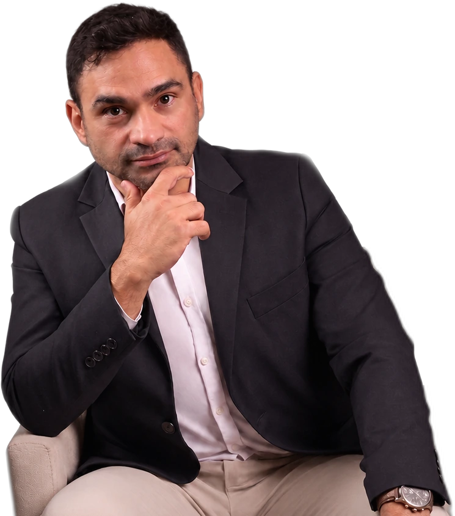

Leitura técnica do cenário
Levantamento das características da edificação, da atividade exercida, dos sistemas existentes e do histórico documental para identificar o procedimento aplicável.
A Sá Moraes avalia a edificação, orienta a documentação
e acompanha o processo junto ao Corpo de Bombeiros.
Fale diretamente com Victor Moraes pelo WhatsApp
ou adiante o atendimento pelo nosso chatbot., para visualizar
quais documentos você precisa para emitir o AVCB*.
*Os documentos gerados no chatbot são uma simulação.
Para confirmar quais documentos são necessários,
sempre valide com um técnico da Sá Moraes Engenharia.

Victor MoraesEngenharia de segurança contra incêndio
O AVCB na Paraíba integra o processo de regularização de segurança contra incêndio, explosão e controle de pânico. O caminho depende da edificação, da atividade, da área, da altura, do risco, da documentação existente e do tipo de certificação aplicável. A Sá Moraes conduz essas etapas com uma visão técnica integrada.
A assessoria organiza o processo de regularização de segurança contra incêndio e ajuda o responsável pela edificação a compreender o que precisa ser levantado, corrigido, documentado e acompanhado perante o Corpo de Bombeiros Militar da Paraíba (CBMPB).
Levantamento das características da edificação, da atividade exercida, dos sistemas existentes e do histórico documental para identificar o procedimento aplicável.
Estruturação das informações, dos documentos e das responsabilidades envolvidas, evitando que decisões importantes sejam tomadas sem base técnica.
Orientação durante as etapas aplicáveis, incluindo adequações, protocolo no Sistema Bravo, resposta aos laudos e solicitações, preparação para vistoria e renovação.
O caminho depende do enquadramento da edificação,
mas a condução técnica precisa ligar diagnóstico, projeto,
execução, protocolo, vistoria e continuidade documental.
Levantamento de ocupação, área, altura, riscos, rotas de fuga, sistemas existentes e situação documental.
Confirmação do fluxo aplicável: processo técnico, processo simplificado (ACPS), evento temporário (AVET) ou outra hipótese prevista nas normas vigentes do CBMPB.
Elaboração ou revisão do projeto de segurança contra incêndio, plantas, memoriais, ART ou RRT válidas e demais documentos exigidos pelas Normas Técnicas.
Submissão pelo Sistema Bravo, controle dos comprovantes e resposta técnica ao Laudo Técnico de Análise (LTA) e às solicitações registradas.
Orientação para instalar, corrigir, testar ou comprovar medidas como extintores, hidrantes, sinalização, iluminação, detecção, SPDA e sprinklers, quando aplicáveis.
Conferência das condições reais, preparação para a vistoria e acompanhamento até o AVCB ou, havendo não conformidades, a resposta ao Laudo Técnico de Vistoria (LTV).
Controle da validade anual e da validade da inspeção, avaliação da Renovação Anual Simplificada (RAS) e reavaliação após mudanças no imóvel ou na atividade.
A lista não é igual para todos. Antes de solicitar qualquer conjunto fechado, é preciso entender a edificação e o tipo de processo. Estes são grupos de informações frequentemente analisados.
Outros elementos podem ser solicitados conforme o enquadramento, as condições encontradas e as orientações do órgão competente.
Empreendimentos de diferentes portes e ocupações podem passar por regularização, renovação ou reavaliação após mudanças. O enquadramento deve ser confirmado individualmente.
Uma estimativa responsável considera a situação real da edificação. O planejamento também precisa prever a validade anual do documento, a validade da inspeção, a manutenção dos sistemas e o suporte nas fiscalizações.
O trabalho pode variar de uma orientação documental a um conjunto mais amplo de projeto, adequações e acompanhamento.
A validade precisa ser acompanhada e as condições de segurança mantidas. Reformas, ampliações, mudança de atividade ou alterações relevantes podem exigir nova avaliação antes mesmo da renovação periódica.
Respostas iniciais para entender o serviço. Elas não substituem o enquadramento técnico nem a consulta às orientações vigentes do Corpo de Bombeiros Militar da Paraíba.
O Auto de Vistoria do Corpo de Bombeiros (AVCB) é uma das modalidades do Certificado de Aprovação emitido pelo CBMPB. Ele certifica, no ato da vistoria, que a edificação, o estabelecimento ou a área de risco atende às exigências aplicáveis de segurança contra incêndio, explosão e controle de pânico.
O AVCB decorre da verificação realizada em vistoria. O ACPS — Auto de Conformidade de Processo Simplificado — é destinado às situações enquadradas no procedimento simplificado e se baseia nas informações, documentos e declarações apresentados. O enquadramento deve ser confirmado conforme as normas vigentes e as características reais do imóvel.
Pela Lei Estadual nº 12.678/2023, o AVCB e o ACPS têm validade de um ano a partir da emissão. A mesma lei prevê prazos próprios para a validade da inspeção, conforme o risco. Por isso, validade do documento e validade da inspeção não devem ser confundidas.
A RAS é o procedimento previsto para renovação anual do AVCB de edificações de baixo e médio risco que ainda estejam dentro do período de validade da inspeção e cumpram os requisitos aplicáveis. A possibilidade deve ser confirmada no caso concreto e nas normas vigentes.
Não. Ocupação, área, altura, carga de incêndio, pavimentos, público, riscos específicos, sistemas instalados, reformas e histórico documental influenciam o procedimento e as medidas exigidas.
O conjunto pode envolver dados da empresa e do imóvel, projeto de segurança contra incêndio, plantas, memoriais, especificações, ART ou RRT, laudos, certificados e evidências de testes e manutenção. A relação final depende do enquadramento e não deve ser presumida sem avaliação.
Valor e prazo dependem do estado da edificação, do projeto disponível, das adequações, dos documentos, das taxas e das etapas do CBMPB. A estimativa deve considerar atividades sob responsabilidade da engenharia, de fornecedores, do responsável pelo imóvel e do órgão, evitando promessas únicas antes do diagnóstico.
Com o documento vencido, o imóvel deixa de ter comprovação de regularidade vigente e fica sujeito às consequências da fiscalização. É necessário avaliar o processo existente, a classificação de risco, a validade da inspeção e as condições atuais do imóvel. Reformas, ampliações, mudança de uso, alteração da lotação ou modificações nos sistemas podem exigir atualização do projeto e novas adequações antes da renovação.
Edificações existentes podem ter tratamento de adaptação conforme a data de construção ou regularização e as condições previstas na NT nº 016/2018 e em outras normas vigentes. A antiguidade não significa dispensa automática.
O LTA é o Laudo Técnico de Análise, emitido no processo de análise de projeto. O LTV é o Laudo Técnico de Vistoria, relacionado à inspeção da edificação ou área. Cada documento deve ser lido integralmente, porque pode registrar aprovação, pendências ou não conformidades.
Sim. O chatbot organiza informações iniciais sobre imóvel, atividade e documentação e ajuda a preparar o atendimento. Ele não realiza o enquadramento definitivo: decisões técnicas, escopo e documentos precisam ser confirmados por profissional responsável.
O CBMPB disponibiliza o Sistema Bravo para abertura e acompanhamento de processos de regularização, além de consulta e validação de documentos e decisões. Os acessos estão reunidos em “Serviços oficiais do CBMPB”; o status deve ser interpretado junto ao histórico e às solicitações registradas.
Encontre informações sobre documentos, etapas, Sistema Bravo, serviços do CBMPB, atuação regional e assuntos técnicos relacionados à segurança contra incêndio.
Respostas para quem precisa entender por onde começar, quais informações reunir e como a regularização é conduzida.
O processo começa pela leitura da edificação: uso, ocupação, área, altura, carga de incêndio, riscos, rotas de fuga, sistemas existentes e documentação disponível. A partir desse diagnóstico é definido o procedimento aplicável — processo técnico, processo simplificado ou evento temporário —, são preparados projeto e documentos, executadas as adequações e acompanhadas as etapas de protocolo no Sistema Bravo, análise, vistoria e certificação.
O diagnóstico registra a situação encontrada, identifica incompatibilidades e separa o que já atende, o que precisa ser comprovado e o que deve ser corrigido. Ele também indica quais documentos precisam ser localizados ou produzidos e oferece base para definir escopo, prioridades e sequência de trabalho.
O plano converte o diagnóstico em tarefas organizadas: decisões de projeto, documentos, responsáveis, adequações, testes, protocolo e preparação para vistoria. A ordem evita executar instalações antes de consolidar o projeto e ajuda a controlar dependências entre engenharia, fornecedores e administração do imóvel.
A relação pode envolver dados do responsável e da empresa, informações do imóvel, projeto de segurança contra incêndio, plantas, memoriais, especificações, ART ou RRT válidas, laudos, certificados e evidências de testes e manutenção. O conjunto final depende do enquadramento e das condições reais da edificação. O portal do CBMPB informa que ART em formato de rascunho não é válida para a regularização, mesmo acompanhada de comprovante de pagamento.
Área, altura, ocupação, carga de incêndio, quantidade de pavimentos, presença de público e características da atividade influenciam o caminho do processo. Esses fatores podem modificar as medidas exigidas, o nível de detalhamento do projeto, os laudos e a necessidade de vistoria.
O prazo reúne etapas sob responsabilidades diferentes: levantamento, projeto, obtenção de documentos, execução, testes, análise do órgão e vistoria. Por isso, uma estimativa segura só pode ser construída depois de identificar pendências, dependências e possíveis exigências do processo.
As adequações podem envolver rotas e saídas, sinalização, iluminação de emergência, extintores, hidrantes, detecção, SPDA, sprinklers e outros sistemas aplicáveis. A orientação técnica deve compatibilizar o projeto, a instalação, os testes e as evidências que serão apresentadas.
A pré-vistoria compara o que está instalado com o projeto e verifica acesso, identificação, funcionamento aparente, documentação e registros disponíveis. O objetivo é localizar pendências antes da vistoria do CBMPB e reduzir o risco de um LTV com não conformidades.
O diagnóstico pode ser contratado como etapa independente para revelar o cenário e apoiar uma decisão. Ele permite compreender riscos, documentos ausentes, possíveis adequações e extensão do trabalho antes de contratar projeto, execução ou acompanhamento completo.
A entrega do projeto encerra uma etapa técnica, mas não executa adequações nem acompanha automaticamente protocolo, exigências, testes, vistoria e emissão. No acompanhamento completo, essas interfaces são coordenadas para manter coerência entre o documento aprovado e a situação real do imóvel.
Sistema Bravo, certificações, validade, laudos, taxas e consulta de processos no Corpo de Bombeiros Militar da Paraíba.
O Sistema Bravo é o canal eletrônico usado para solicitar e acompanhar serviços de análise de projetos, vistorias técnicas, certificações e outros procedimentos de atividades técnicas do CBMPB. Antes do protocolo, dados cadastrais, projeto, ART ou RRT, comprovantes e arquivos precisam estar coerentes entre si.
A Lei Estadual nº 12.678/2023 define o Certificado de Aprovação e suas modalidades. O AVCB (Auto de Vistoria do Corpo de Bombeiros) certifica, no ato da vistoria, o atendimento às exigências. O ACPS (Auto de Conformidade de Processo Simplificado) baseia-se nas informações, documentos e declarações do processo simplificado. O AVET (Auto de Vistoria para Eventos Temporários) vale para o evento autorizado. A AFP (Autorização de Funcionamento Provisório) pode ser concedida a situações em regularização, mediante requisição justificada no sistema oficial — não é direito automático nem substitui a certificação.
Edificações que atendam aos critérios vigentes podem seguir o procedimento simplificado e obter o ACPS. O enquadramento não depende apenas da área: ocupação, pavimentos, lotação, armazenamento de GLP ou inflamáveis, produtos perigosos e outros fatores podem impedir o uso do fluxo simplificado. As declarações prestadas permanecem sujeitas à fiscalização posterior.
Pela Lei Estadual nº 12.678/2023, AVCB e ACPS valem um ano a partir da emissão, e o AVET acompanha o período do evento, limitado a um ano. Já a inspeção tem prazos próprios conforme o risco: até cinco anos para baixo risco, dois anos para médio risco e um ano para alto risco. São prazos diferentes e precisam ser controlados separadamente.
Após o primeiro AVCB, edificações de baixo e médio risco que estejam dentro do período de validade da inspeção podem renovar o certificado pela RAS, observados os requisitos legais e normativos e a responsabilidade declarada sobre a manutenção dos sistemas aprovados. Alterações no imóvel ou na atividade podem afastar essa possibilidade.
O LTA (Laudo Técnico de Análise) é emitido na análise do projeto e pode aprová-lo ou registrar não conformidades. O LTV (Laudo Técnico de Vistoria) resulta da inspeção da edificação ou área. Os dois devem ser lidos integralmente: cada item apontado precisa de resposta técnica coerente antes do novo protocolo ou da nova vistoria.
As taxas dependem do serviço, da área, do grupo de ocupação e das regras vigentes, com valores referenciados na UFR-PB. Por isso, devem ser consultadas no sistema oficial no momento do protocolo; os comprovantes precisam permanecer no histórico documental do processo.
O portal de sistemas do CBMPB oferece acesso a processos, consulta e validação de documentos e decisões da área de atividades técnicas. O status deve ser interpretado junto ao histórico e às solicitações registradas; uma mudança de status não substitui a leitura dos laudos.
A responsabilidade técnica deve ser comprovada por ART ou RRT válidas, conforme a atividade. O portal do CBMPB informa que ART em formato de rascunho não é válida para a regularização, mesmo acompanhada de comprovante de pagamento. Também há exigência de ART para a elaboração do Plano de Intervenção, quando aplicável.
A NT nº 016/2018 trata da adaptação de edificações existentes às normas de segurança contra incêndio e usa 24 de junho de 2012 como marco relevante. A antiguidade do imóvel não significa dispensa automática: as medidas aplicáveis dependem da situação documental, da ocupação e das condições reais.
A NT nº 007/2023 trata da integração do licenciamento do CBMPB à REDESIM, o sistema de registro e licenciamento de empresas. A integração não dispensa as medidas de segurança: o procedimento e os documentos continuam dependendo da edificação, da atividade e do enquadramento.
O CBMPB publica leis, normas técnicas, atualizações normativas, resoluções e portarias, e mantém uma seção de normas revogadas. Antes de definir o procedimento ou especificar sistemas, é necessário confirmar a versão vigente de cada norma.
Conteúdos organizados por região de atendimento na Paraíba.
Edifícios empresariais, condomínios, clínicas, restaurantes, comércio, serviços e imóveis adaptados para novos usos podem exigir avaliação do projeto, dos sistemas instalados e do histórico documental. O endereço não determina sozinho o processo: ocupação, área, altura, reformas e condições dos sistemas continuam determinantes para o enquadramento.
Comércio, serviços, centros de compras, indústrias, depósitos, escolas, hotéis e locais de reunião de público apresentam perfis distintos. A análise deve considerar ocupação, fluxo de pessoas, armazenamento, área, altura e medidas existentes.
O CBMPB mantém unidade em Guarabira. Comércios, serviços, escolas e locais com circulação de público da região seguem as mesmas normas estaduais; a condução técnica considera o canal oficial, a unidade responsável e as características reais de cada edificação.
O CBMPB também possui unidade em Patos. Para imóveis do Sertão, o procedimento é o mesmo do restante do estado: o enquadramento depende da ocupação, da área, da altura, dos riscos e da documentação, e não apenas do município.
Sousa e Cajazeiras contam com unidades descentralizadas do CBMPB. A regularização de comércios, serviços, depósitos e locais de reunião de público deve partir do diagnóstico da edificação e do acompanhamento pelo Sistema Bravo.
O CBMPB possui unidades em municípios como Catolé do Rocha, Itaporanga, Sapé e Pombal. O processo não muda apenas por causa do município: a análise considera o canal oficial, a unidade responsável e as características reais de cada imóvel.
Critérios para compreender a responsabilidade técnica e avaliar a estrutura oferecida por uma empresa especializada.
Verifique quem assume a responsabilidade técnica, quais entregas estão incluídas e como serão conduzidos projeto, adequações, protocolo e vistoria. Experiência comprovável, escopo por escrito, transparência documental e capacidade de responder às etapas posteriores são mais importantes que promessas genéricas de rapidez.
Segurança contra incêndio cruza arquitetura, instalações elétricas e hidráulicas, estruturas, operação, manutenção e documentação. Uma equipe multidisciplinar reduz incompatibilidades e permite que cada decisão seja avaliada por quem possui competência para aquele componente.
Formação, registro profissional, credenciamento e certificações precisam ser verificáveis e relacionados ao serviço prestado. A Sá Moraes informa contar com engenheiros qualificados e credenciados, apoiados por direção técnica com formação e certificações específicas em segurança contra incêndio.
A direção técnica coordena critérios normativos, decisões de engenharia e respostas às situações encontradas. Mais de 20 anos de experiência, atuação na Paraíba, formação acadêmica e participação profissional ajudam a sustentar decisões que precisam ser explicadas, documentadas e assumidas tecnicamente.
O escopo deve identificar os profissionais responsáveis e os respectivos registros, como ART ou RRT, conforme a atividade desenvolvida. Isso distingue orientação comercial de serviço técnico e estabelece quem responde pelo projeto, laudo, inspeção ou acompanhamento contratado.
O acompanhamento pode incluir orientação de fornecedores, conferência de adequações, organização de evidências, protocolo, respostas técnicas, preparação para vistoria e apoio durante fiscalizações. O escopo precisa deixar claro até onde a equipe acompanha e quais atividades dependem de terceiros.
Experiências da Sá Moraes apresentadas com contexto, trabalho realizado, resultado e limites de divulgação.
A Sá Moraes declara mais de 20 anos de atuação, incluindo a Paraíba, com experiência em imóveis comerciais, industriais e condomínios. O portfólio deve ser apresentado por segmento, complexidade e escopo realizado, preservando nomes e informações que não tenham autorização de divulgação.
Um caso útil precisa mostrar a situação inicial, a pendência identificada, a intervenção executada e o resultado verificável. Fotografias, plantas, documentos ou indicadores só devem ser publicados quando houver autorização; sem essa evidência, o site não apresentará nomes ou resultados inventados.
Quando projeto, execução e documentação permanecem coerentes, o responsável ganha melhor controle das pendências, dos registros de manutenção e das próximas renovações. Isso reduz retrabalho, melhora a previsibilidade documental e protege a continuidade responsável da operação.
Assuntos para quem deseja aprofundar a relação entre projeto, instalações e condições de segurança.
Quantidade, largura, distância, distribuição e desobstrução das saídas precisam ser compatíveis com ocupação e público previsto. Alterações de layout, fechamento de passagens ou aumento de lotação podem invalidar premissas consideradas no projeto anterior.
Quadros, circuitos, proteções, aterramento, condições de uso e registros de manutenção integram a prevenção. Instalações improvisadas, sobrecargas e alterações sem documentação precisam ser avaliadas junto às demais medidas de segurança da edificação.
Extintores, hidrantes, iluminação, sinalização, detecção, SPDA e sprinklers dependem de inspeção, testes e manutenção compatíveis com cada sistema. A simples presença do equipamento não comprova que ele está acessível, dimensionado e em condição de funcionamento.
A emissão do documento registra uma condição verificada em determinado momento. Para conservar a conformidade, o responsável precisa controlar inspeções, testes, certificados, alterações físicas, mudança de uso e intervenções realizadas nos sistemas.
O projeto define critérios, a instalação materializa as soluções, os testes demonstram o desempenho e os documentos registram o que foi executado. Quando essas quatro camadas divergem, surgem exigências, retrabalho e incerteza sobre a condição real da edificação.
Converse diretamente com a equipe ou use o chatbot para reunir as informações iniciais antes do atendimento técnico.
Conteúdo informativo. O enquadramento, os documentos, as medidas de segurança e o procedimento devem ser confirmados conforme as condições da edificação e as regras vigentes do CBMPB.
Fiscalizações, auditorias e mudanças na legislação que ajudam a compreender a segurança contra incêndio no estado.
O Ministério Público da Paraíba, por meio do MP-Procon, alinhou medidas para a execução de um projeto de combate a incêndio em um estabelecimento hoteleiro de Campina Grande, no acompanhamento de um termo de ajustamento de conduta. O objetivo é a execução do projeto de prevenção e a obtenção da certificação do Corpo de Bombeiros. O caso mostra que a regularização envolve projeto, execução e certificação — e não apenas a apresentação de documentos.
Ver relatório originalEm auditoria coordenada, o Tribunal de Contas do Estado da Paraíba inspecionou maternidades e registrou achados relacionados ao laudo do Corpo de Bombeiros, aos sistemas de detecção e combate a incêndio, à brigada e aos extintores. O relatório reforça que a segurança contra incêndio em estabelecimentos de saúde depende de sistemas mantidos, pessoas treinadas e documentação em dia.
Ver o texto da leiA Lei Estadual nº 12.678, de 12 de junho de 2023, alterou a Lei nº 9.625/2011, que institui o Código Estadual de Proteção Contra Incêndio, Explosão e Controle de Pânico. Ela formalizou o Certificado de Aprovação nas modalidades AVCB, ACPS e AVET, criou a Autorização de Funcionamento Provisório (AFP), fixou validade de um ano para AVCB e ACPS e estabeleceu prazos de validade da inspeção conforme o risco, com possibilidade de Renovação Anual Simplificada para baixo e médio risco.
Uma visão complementar para compreender riscos, documentos, medidas de segurança, causas de exigências, escopos de serviço e a estrutura técnica responsável pelo acompanhamento.
Informações para compreender o documento, sua relação com a operação do imóvel e os cuidados necessários com prazo e validade.
Na Paraíba, AVCB é a nomenclatura legal vigente. A Lei Estadual nº 12.678/2023 define o Certificado de Aprovação nas modalidades AVCB (Auto de Vistoria do Corpo de Bombeiros), ACPS (Auto de Conformidade de Processo Simplificado) e AVET (Auto de Vistoria para Eventos Temporários), e prevê a AFP (Autorização de Funcionamento Provisório) para situações em regularização, mediante requisição justificada. O documento cabível depende do enquadramento de cada edificação.
Consultar a Lei Estadual nº 12.678/2023Comércios, serviços, escritórios, condomínios multifamiliares, depósitos, indústrias, escolas, templos e locais com circulação de público podem precisar de regularização. Reformas, ampliações, mudança de atividade ou alteração do armazenamento também podem exigir nova avaliação, mesmo quando já existe documento anterior.
A dispensa não deve ser entendida como uma regra geral para qualquer imóvel. A norma prevê tratamentos específicos conforme ocupação, uso e configuração da edificação. Residências privativas unifamiliares podem ter isenções relacionadas a sistemas de segurança, mas agrupamentos, vilas, edificações multifamiliares, atividades econômicas e áreas de risco seguem critérios próprios. O enquadramento precisa ser confirmado para a situação real do imóvel e conforme as regras vigentes do CBMPB.
Consultar as normas técnicas vigentes do CBMPBPendências podem resultar em exigências, multas ou interdição, conforme a fiscalização e a situação encontrada. Também podem comprometer contratos, faturamento, continuidade operacional e análise de cobertura por seguradoras. Esses efeitos não são usados como ameaça: são consequências que precisam ser consideradas no planejamento responsável do imóvel.
O prazo do processo depende de documentação, projeto, adequações, respostas técnicas, análise e vistoria. Pela Lei Estadual nº 12.678/2023, AVCB e ACPS valem um ano a partir da emissão, e o AVET acompanha o período do evento, limitado a um ano. A validade da inspeção é diferente: até cinco anos para baixo risco, dois anos para médio risco e um ano para alto risco. Dentro desse período, edificações de baixo e médio risco podem renovar o AVCB pela Renovação Anual Simplificada (RAS), observados os requisitos aplicáveis. A validade não elimina a obrigação de conservar as condições de segurança e reavaliar mudanças relevantes.
Consultar a Lei Estadual nº 12.678/2023O processo precisa manter coerência entre os documentos técnicos, as medidas instaladas, os testes realizados e as condições reais da edificação.
O projeto de segurança contra incêndio reúne as soluções definidas para o caso. Plantas localizam e dimensionam os elementos; memoriais justificam critérios e cálculos; especificações descrevem materiais, equipamentos e condições de execução. Esses documentos precisam representar a mesma solução. O CBMPB publica modelo atualizado de memorial descritivo e modelos de requerimentos.
Ver o modelo de memorial descritivo do CBMPBART e RRT identificam os profissionais vinculados às atividades técnicas; a ART em formato de rascunho não é aceita pelo CBMPB. Laudos e atestados documentam inspeções, testes ou condições específicas, mas devem indicar escopo, método, data, resultado e responsável, sem serem usados como substitutos genéricos do projeto.
A seleção, distribuição e condição dos sistemas de combate dependem da ocupação, dos riscos e do projeto aplicável. Reserva, bombas, redes, válvulas, pontos de utilização, identificação, acesso, inspeção e testes precisam permanecer compatíveis com o que foi especificado.
As rotas precisam ser compreendidas mesmo em falta de energia ou presença de fumaça. Posicionamento, visibilidade, autonomia, alimentação, desobstrução e correspondência com o percurso real devem ser verificados, especialmente após mudanças de layout.
Detectores, acionadores, avisadores, centrais e interfaces precisam ser definidos conforme o risco e a estratégia de abandono. Instalação e programação devem ser acompanhadas por testes e registros que demonstrem a resposta do conjunto.
O SPDA e as medidas complementares exigem avaliação técnica, inspeções e documentação apropriada. Certificados, relatórios, registros de manutenção e evidências fotográficas devem estar organizados e corresponder aos equipamentos efetivamente instalados.
Os pontos abaixo estão entre as causas recorrentes de retrabalho. Cada item deve ser analisado conforme o imóvel e o processo aplicável.
Informar ocupação, área, altura ou risco de maneira incorreta pode alterar o procedimento e as medidas consideradas. A consequência é revisar documentos, recolher novas informações e, em alguns casos, refazer decisões já executadas. O levantamento inicial precisa registrar o uso real do imóvel.
Plantas, memoriais, cálculos e especificações devem representar a mesma solução e corresponder ao imóvel. Divergências entre documentos geram dúvida sobre o que deve ser analisado ou executado. Uma revisão de compatibilidade antes do protocolo reduz esse tipo de exigência.
Comprar equipamentos ou iniciar instalações antes da definição técnica pode produzir medidas subdimensionadas, excessivas ou incompatíveis. A sequência mais segura é consolidar critérios, especificar o sistema e só então orientar aquisição, instalação e testes.
Dados cadastrais, ART ou RRT válidas, laudos, certificados, comprovantes e evidências precisam ser conferidos antes da submissão. Uma lista de documentos não deve ser tratada como universal: o responsável precisa validar o conjunto exigido para aquele processo.
Serviços sem data, identificação, resultado ou responsável dificultam demonstrar a condição dos sistemas. Registros organizados permitem acompanhar periodicidade, localizar falhas recorrentes e apresentar evidências coerentes durante renovação ou fiscalização.
Deixar a regularização para o fim reduz o tempo para localizar documentos, contratar adequações, responder exigências e compatibilizar agendas. Um cronograma deve considerar dependências e margens para correções, sem prometer duração única antes do diagnóstico.
O escopo é definido após a análise do imóvel. A comparação abaixo mostra onde cada serviço costuma se aplicar e quais atividades podem integrar o acompanhamento.
| Serviço | Aplicação | Trabalho realizado |
|---|---|---|
| AVCB — Auto de Vistoria do Corpo de Bombeiros | Edificações cuja certificação depende de vistoria, conforme o enquadramento. | Avaliação, projeto quando aplicável, documentação, protocolo, orientação das adequações, preparação para vistoria e acompanhamento da emissão. |
| ACPS — Auto de Conformidade de Processo Simplificado | Situações enquadradas no processo técnico simplificado vigente. | Confirmação do enquadramento, organização das informações e declarações, orientação para emissão e manutenção posterior das condições de conformidade. |
| Laudos e atestados técnicos | Sistemas ou condições que exigem inspeção, teste ou comprovação específica. | Inspeções, testes quando aplicáveis, elaboração documental, registro de evidências e identificação da responsabilidade técnica. |
| Consultoria técnica | Estudos preliminares, decisões de viabilidade e avaliação de instalações existentes. | Visitas, diagnóstico, análise de alternativas, pré-vistoria e orientação para integrar projeto, execução e documentação. |
| Renovação e RAS | Certificados próximos do vencimento, vencidos ou afetados por mudanças na edificação. | Controle da validade anual e da validade da inspeção, avaliação da Renovação Anual Simplificada (RAS) quando cabível, atualização de laudos e documentos e apoio técnico em fiscalizações. |
Experiência aplicada à organização técnica e documental de processos de segurança contra incêndio na Paraíba.
A direção técnica atua há mais de 20 anos em segurança contra incêndio, com experiência na Paraíba. A empresa informa experiência em segurança contra incêndio e regularização de imóveis comerciais, industriais e condomínios.
A equipe reúne diferentes especialidades para coordenar análise, projeto, instalações, documentação e acompanhamento, com identificação dos profissionais responsáveis por cada escopo técnico.
A Sá Moraes declara um portfólio robusto construído ao longo de sua atuação. Casos, imagens e resultados específicos devem ser apresentados somente quando houver evidência e autorização de divulgação.
A metodologia busca reduzir retrabalho, aumentar a previsibilidade documental e acompanhar as interfaces entre diagnóstico, projeto, execução, protocolo, vistoria e documento final.
Victor Moraes lidera a análise normativa e o direcionamento técnico dos processos acompanhados pela Sá Moraes Engenharia.
Engenheiro eletricista, Engenheiro de Segurança do Trabalho, Mestre em Engenharia Civil pela UPE/POLI e sócio da Sá Moraes Engenharia.
Qualificações apresentadas pela direção técnica da empresa:
Converse com um técnico ou organize as informações iniciais pelo chatbot.
Pesquise um assunto ou abra uma pergunta para consultar a resposta.
Nenhuma pergunta corresponde à sua pesquisa.